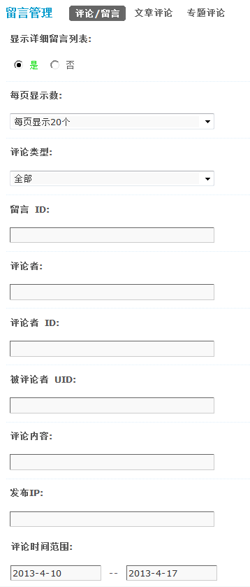
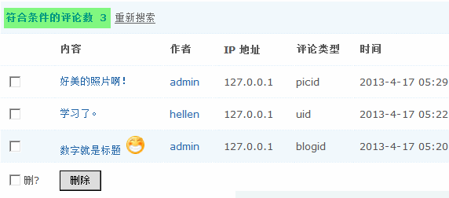
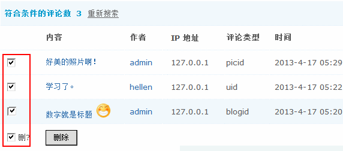
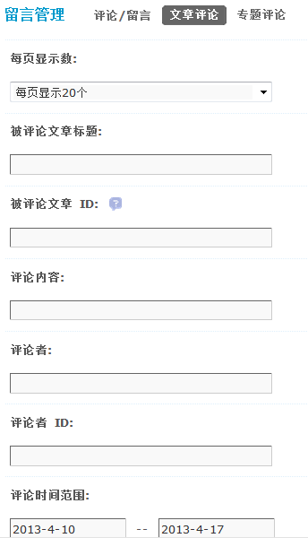
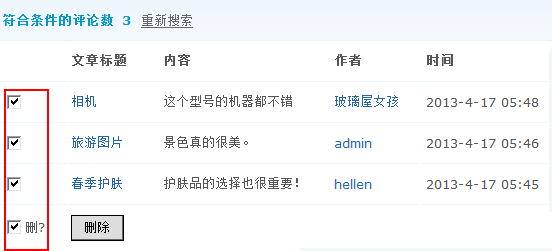
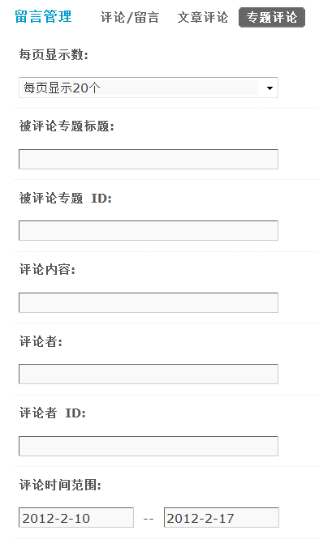
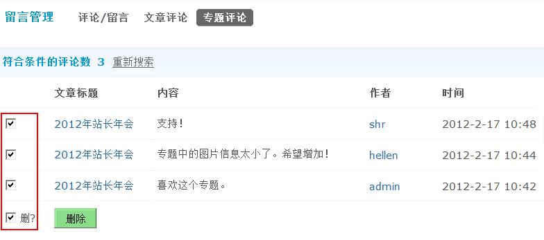

评论/留言管理
通过评论/留言管理功能，站长可以方便的搜索和管理站点的评论/留言，包括日志、分享、图片、文章和专题的评论。
一、评论/留言
操作路径：【后台】=>【内容】=>【评论/留言管理】
管理员可以设置搜索条件，划定搜索范围，如下图所示：
1、显示详细留言列表： 选择“是”，则在搜索结果中列出符合条件的评论详细信息；选择“否”，则只会在结果中显示出符合条件的评论数量。
选择“是”的效果如下：
2、每页显示数：每页显示多少条评论。
3、评论类型：选择评论的类型，包括全部、留言、日志、图片和分享。
4、留言ID：按留言的 id 号进行搜索，多个留言ID中间请用半角逗号”,” 分割。
5、评论者：评论者的用户名，多评论者名中间请用半角逗号”,” 分割。
6、评论者ID：评论者的ID，多评论者ID中间请用半角逗号”,” 分割。
7、被评论者UID：被评论者的 UID 号，多UID中间请用半角逗号”,” 分割。
8、评论内容：按评论的内容关键字进行搜索。
9、发布IP：按照发布评论的 IP 地址进行搜索，可使用通配符’*’对某网段进行筛选，慎用！
10、评论时间范围：格式 yyyy-mm-dd，不限制请输入0。
点击‘提交’后即可进行搜索。
二、删除评论
按照上面的搜索条件搜索到评论后，可以选择单个、多个、或者全部选中进行批量删除操作。
三、文章评论
这里管理非帖子推送的文章的评论，由帖子推送生成的文章的评论，请到批量删帖管理。
管理员可以设置搜索条件，划定搜索范围，如下图所示：
1、每页显示数：每页显示多少条文章评论。
2、被评论文章标题：按照被评论文章标题进行搜索。
3、被评论文章ID：按照被评论文章ID进行搜索，多个被评论文章ID中间请用半角逗号”,” 分割。
4、评论内容：按照评论内容进行搜索。
5、评论者：按照评论者进行搜索。
6、评论者ID：按照评论者ID进行搜索，多评论者ID中间请用半角逗号”,” 分割。
7、评论时间范围：格式 yyyy-mm-dd，不限制请输入0。
点击‘提交’后即可进行搜索。
四、删除文章评论
按照上面的搜索条件搜索到评论后，可以选择单个、多个、或者全部选中进行批量删除操作。
这里可以看到文章标题、文章评论的内容、评论者、以及评论时间。
点击“作者”可以查看到评论者的个人资料。
五、专题评论
用于删除门户里专题的评论。
管理员可以设置搜索条件，划定搜索范围，如下图所示：
1、每页显示数：每页显示多少条文章评论。
2、被评论专题标题：按照被评论专题标题进行搜索。
3、被评论专题ID：按照被评论专题ID进行搜索，多个被评论专题ID中间请用半角逗号”,” 分割。
4、评论内容：按照评论内容进行搜索。
5、评论者：按照评论者进行搜索。
6、评论者ID：按照评论者ID进行搜索，多评论者ID中间请用半角逗号”,” 分割。
7、评论时间范围：格式 yyyy-mm-dd，不限制请输入0。
点击‘提交’后即可进行搜索。
六、删除专题评论
按照上面的搜索条件搜索到评论后，可以选择单个、多个、或者全部选中进行批量删除操作。
这里可以看到专题的标题、专题评论的内容、评论者、以及评论时间。
点击“作者”可以查看到评论者的个人资料。